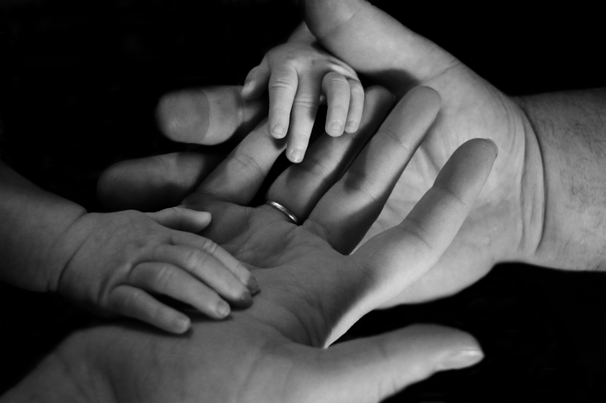
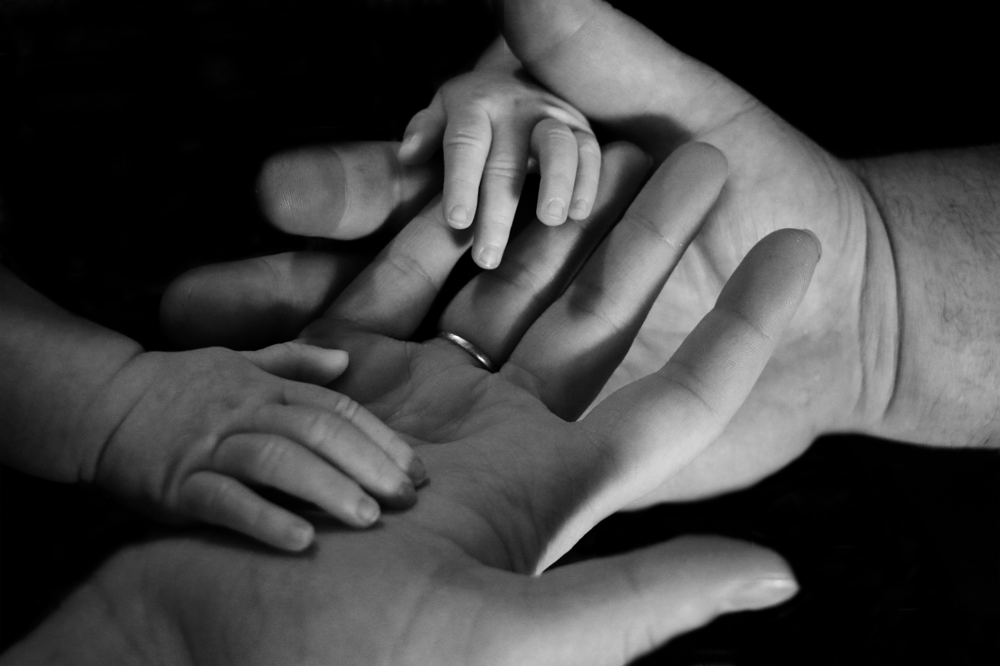

favorite O que é a ODS 3?
A ODS 3 faz parte dos Objetivos de Desenvolvimento Sustentável da ONU e tem como meta assegurar uma vida saudável e promover o bem-estar para todos, em todas as idades. Ela trata de temas como o acesso à saúde de qualidade, vacinação, prevenção de doenças e cuidado com as famílias.
 

child_care O que é a ODS 3.2?
A meta ODS 3.2 busca acabar com as mortes evitáveis de recém-nascidos e crianças menores de 5 anos. Isso inclui garantir que todas as crianças recebam vacinas, tenham acompanhamento médico adequado e que as famílias saibam como agir em situações de emergência.
Aqui no VidaKids, queremos ajudar fam√≠lias e cuidadores com informa√ß√µes simples e seguras sobre vacinas, primeiros socorros e dicas de cuidado infantil. Juntos, podemos construir um futuro mais saudável para nossas crian√ßas! üíï